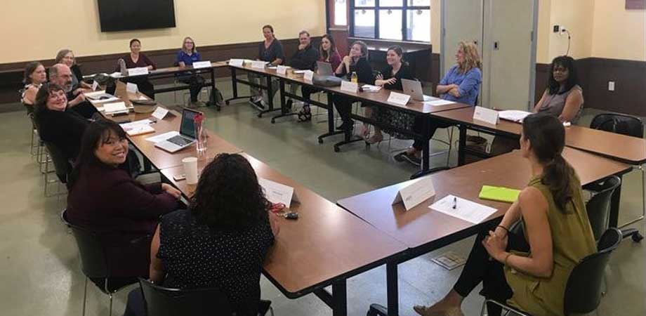

San Diego STEM Ecosystem Working Groups Are Focused and Effective

March 20, 2017
San Diego, CA, boasts a wonderful climate and beautiful setting, but it also is a hotspot for STEM careers and development, with a high concentration of PhDs and a significant percentage of the labor force engaged in STEM careers. The San Diego STEM Ecosystem has a unique infrastructure, with active Working Groups that reflect the diverse stakeholders in the STEM realm. These groups include:
- Corporate Partnerships
- Early Childhood STEM
- Environmental Education
- Expanding Access
- Innovation in K-12
- Women in STEM
The Working Groups are taking measurable steps to create a San Diego where every learner is at the center of a rich ecosystem of connected STEM learning opportunities and STEM-supportive individuals. My role as an AmeriCorps VISTA has given me the opportunity to work closely with the members of these working groups. Members’ intrinsic motivation to serve on these Working Groups, without incentive or personal award, is inspiring and I believe a true testament to their passion for STEM and for students.
The first Working Groups formed organically when members of the community took the initiative to work together. We observed their success and began an active program to develop additional groups. First, I identified influential organizations in the county pertinent to the focus and reached out to potential members either by email or by networking at local STEM-related events. I invited about 50 individuals to the first meeting for each new Working Group hosted by my AmeriCorps service site. The Women in STEM Working Group first met in October with 18 people and now consists of 42 individuals representing 31 different organizations. The Environmental Education Working Group, begun in December with 18 people, now has 32 people and 26 different organizations. We got right to work at the first meetings, discussing our mission, goals, and measurable outcomes, which paved the way to brainstorming actionable steps. We chose a Working Group chair and co-chair. Each Working Group meets at least once month or as needed at various locations.
The working group model allows people to engage in the kind of work they’re most passionate about within the larger ecosystem. All of the San Diego STEM Ecosystem’s working groups have a common mission: Build county-wide networks primed for collective action initiatives. Following are examples of the efforts of a few of the groups.
The Expanding Access Working Group is comprised of leaders/stakeholders that already have a vested interest in supporting STEM learning outside of school hours and are focused on promoting equitable access to these types of STEM learning opportunities in San Diego County. Christine Carrera is the Chair of the Expanded Access Working Group and an Expanded Learning Project Specialist in the San Diego County Office of Education. “Our group sees access to STEM learning as a social justice issue. We know that it will take all available hours of the day, all the days of the week, and all hands on deck in the community (not just the compulsory school day/year and K-12 systems) to give all county residents equitable access to opportunities,” she said.
The Expanding Access group is making strategic efforts to identify and working with existing community leaders to establish a STEM Champion in marginalized communities. This spring, the Working Group will administer a survey to a handful of neighborhoods to assess which area to target first. The Group will work with the Champion to build the capacity and sustainability of their neighborhood’s commitment to high-quality STEM learning experiences outside of school hours and in various locations. They will also increase development of STEM partnerships within each community, through an intentional connection to the San Diego STEM Ecosystem – and potentially with some of the companies identified by the Ecosystem’s Corporate Partnerships specialists. The Expanding Access Group also plans to establish a neighborhood community of practice with other stakeholders such as educators and parents.
The Business Partnerships Working Group had to work past some misconceptions right away. “It’s not just about funding from local corporations,” said Working Group Chair Mike Snyder. “It’s about developing true partnerships between the school districts and the local companies. All schools want support from local businesses, and these days most want to offer that support. But they often don’t speak the same language. Getting everyone in the same room with all their goals on the table helps match up abilities to needs.”
For example, a Sustainability Day had initially been planned where a few students would create and share presentations. Instead, local STEM business partners whose daily work involves sustainability research and application hosted the event. They shared exhibits and working professionals answered questions based on real-life scenarios. All students had the opportunity to interact with scientists and to learn about a potential career path.
A few organizations in the Innovation in K-12 Working Group have partnered together to pilot and host a professional development workshop this May. This workshop is designed to provide teachers with high quality models, concrete planning tools, teaching strategies and community connections to integrate the real world in the classroom.
In addition, some members of the Women in STEM Working Group partnered and applied for a grant this past November. If awarded, they will use the funding towards STEM mentorship programs for girls and to create a STEM directory for San Diego County.
“We’re still living the ‘pilot’ phase of this working group model,” said Carrera. “When our working group originally formed we had a completely different model of community engagement. In hindsight, I think our group could have spent more time around identifying the real issue/problem/need we were trying to address in our communities. We definitely had a case of ‘solution-itis’ at the beginning, but I think now we’re really onto something with focusing on existing STEM Champions and encouraging other community leaders to activate themselves as champions for STEM.”
On the other hand, Snyder said he’s learned that to engage corporate partners, a group must have a working model, even if it needs to be adjusted. “I’d rather ask a company to join us on a working project and solicit their input on how to improve it than to tell them we have big plans but we haven’t started moving yet. You have to get beyond dialog and have something tangible as quickly as possible.” Finding the balance between a plan and action is key.
Snyder said he’s excited at the collaboration that’s happening with other groups across the country, as well in the San Diego STEM Ecosystem. “Before, I knew that if I had a good idea I could carry it out in my own community. With the sharing within our Ecosystem we now have county-wide access, and with the STEM Learning Ecosystems National Community of Practice we can connect with others and grow the idea to have a national impact. That not only spreads a good idea, it can also help our partners succeed.”
I love my work as an AmeriCorps VISTA and the way that I am able to support STEM education. The San Diego STEM Ecosystem is constantly growing as people in the community hear about us and view our website, and as we share Ecosystem brochures and invite other STEM providers we meet at local events, summits, and conferences. This initiative is still in its first year of existence, but there are already 90 organizations in the Working Groups! I am excited to see what else this Ecosystem will accomplish as the Groups continue to gain momentum to create a region where every learner is at the center of a STEM-rich environment.
Author Emily Hollas, AmeriCorps VISTA supporting the San Diego STEM Ecosystem
Learn more about the STEM Learning Ecosystems initiative and find resources for your Ecosystem at stemecosystems.org. Join our online conversations on Twitter @STEMecosystems and #STEMecosystems and on Facebook.
Related Articles

Remake Learning Days Across America (RLDAA) returns this spring to San Diego County between April 22 – May 2, with family-friendly learning events designed to engage caregivers and kids.

Weren't able to attend the Collab Lab on October 16th? This post contains an overview of what was said and deliberated.
Reach out to stemecosystem@rhfleet.org for elaboration or with questions.

New Stanford research shows that sentences that frame one gender as the standard for the other can unintentionally perpetuate biases.

STEM Learning Ecosystems to equip its leaders with skills for building community and national networks that help youth reach educational and career success